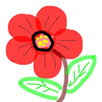

我如果爱你——绝不像攀援的凌霄花，借你的高枝炫耀自己；我如果爱你——绝不学痴情的鸟儿为绿荫重复单调的歌曲；也不止像泉源长年送来清凉的慰藉；也不止像险峰增加你的高度，衬托你的威仪。甚至日光。甚至春雨。不，这些都还不够！我必须是你近旁的一株木棉，作为树的形象和你站在一起。根，紧握在地下，叶，相触在云里。每一阵风吹过我们都互相致意，但没有人听懂我们的言语。你有你的铜枝铁干，像刀、像剑也像戟；我有我红硕的花朵像沉重的叹息，又像英勇的火炬。我们分担寒潮、风雷、霹雳；我们共享雾霭、流岚、虹霓。仿佛永远分离，却又终身相依。这才是伟大的爱情，坚贞就在这里：不仅爱你伟岸的身躯，也爱你坚持的位置，脚下的土地。
轻轻的我走了，正如我轻轻的来；我轻轻的招手，作别西天的云彩。那河畔的金柳，是夕阳中的新娘；波光里的艳影，在我的心头荡漾。软泥上的青荇，油油的在水底招摇；在康河的柔波里，甘心做一条水草！那榆荫下的一潭，不是清泉，是天上虹；揉碎在浮藻间，沉淀着彩虹似的梦。寻梦？撑一支长篙，向青草更青处漫溯；满载一船星辉，在星辉斑斓里放歌。但我不能放歌，悄悄是别离的笙箫；夏虫也为我沉默，沉默是今晚的康桥！悄悄的我走了，正如我悄悄的来；我挥一挥衣袖，不带走一片云彩。
心灵成长值

今日：